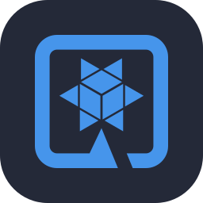
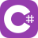
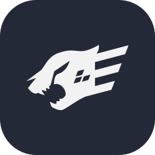
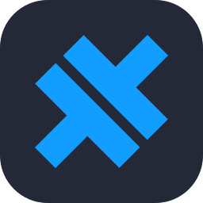
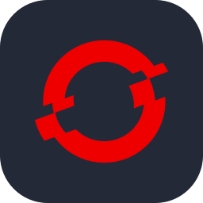
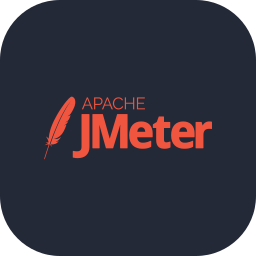
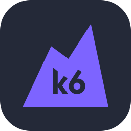
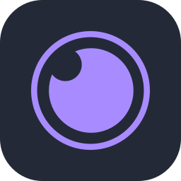

Frontend
Interfaces claras, rápidas y responsivas.
 React
React- Angular
- Vue.js
 Astro
Astro- TypeScript
 JavaScript
JavaScript
Desarrollador Fullstack
Me gusta construir software que la gente use de verdad. Desarrollo sistemas web, de escritorio y móviles, desde la interfaz hasta el servidor, y los dejo listos para producción.
Conecta
Conóceme
Soy desarrollador de software en Ica, Perú. Soy técnico en desarrollo de software por SENATI y estoy terminando Ingeniería de Software en la UTP. Trabajo en web, escritorio y móvil, del frontend a la infraestructura.
Primero entiendo el problema; luego elijo la solución más simple que funcione. Código claro, pruebas y sistemas fáciles de mantener.
Trayectoria
Caja Ica
Desarrollo de aplicaciones web y móviles (Android e iOS) y de servicios con Spring Boot y .NET Core, con mensajería en Kafka y RabbitMQ, caché en Redis, pruebas con JUnit y Mockito, y despliegue continuo con Jenkins y OpenShift.
Consultorio médico particular
Desarrollé un sistema de historias clínicas con microservicios, auditoría de accesos y respaldos desde el propio sistema, que se instala con un solo comando.
Policlínico de salud ocupacional
Construí la plataforma que une la atención, la firma de especialistas y la entrega de resultados. Funciona en web, Windows y Android, con lector de huella, firma digitalizada y un portal para empresas y pacientes.
Holosalud
Diseño y desarrollo de interfaces de usuario y aplicaciones web con AngularJS y TypeScript, y de servicios con Quarkus, ASP.NET MVC, PHP y Go. Implementé mejoras y actualicé el código según las necesidades de cada proyecto.
Habilidades y herramientas
Interfaces claras, rápidas y responsivas.
APIs y microservicios seguros y mantenibles.

Quarkus
C#
FastifyBases relacionales, caché, colas y archivos.
La misma app en el teléfono y en la PC.

CapacitorDel código a producción, sin pasos a mano.

OpenShiftCalidad medida y trabajo en equipo.

JMeter
k6
InsomniaPortafolio
Atención por servicios, ficha médica, diagnósticos y firma de especialistas. Las empresas descargan la historia clínica laboral y ven exámenes por vencer.
Pacientes, historias clínicas y auditoría de cada acceso para un consultorio. Respaldo y restauración desde el propio sistema.
Ponte en contacto